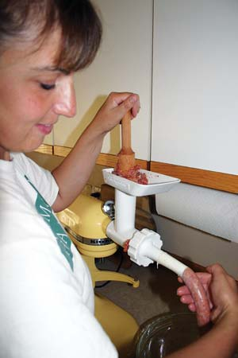

Do you know what’s in your sausage? Many grocery store brands list monosodium glutamate, propyl gallate (a food preservative) and corn syrup solids. If these aren’t the ingredients you want on your menu, make sausage yourself. It’s also a good way to utilize lesser quality meat, or to improve the sometimes strong flavor of wild game.
Making fresh sausage is simple. It’s a matter of grinding the meat and adding spices. If you like links, you can invest in mechanized sausage stuffers that transfer the ground meat from a hopper through a funnel to the sausage casing.
Pork and beef are the most common meats for homemade sausage making, but wild game lends itself well to the process. When using deer or elk meat, add 20 percent or more pork trimmings to enhance the flavor and texture of the finished sausage.
The beauty of making your own sausage is you can make it as spicy or mild as you desire - load it with garlic or give it a strong flavor to stand out in any dish. If you’re not sure what spices you like, packaged sausage seasonings are an excellent way to start. After mixing the spices in the meat, fry up a small amount and taste before freezing or stuffing it in the casings. Sporting goods stores, such as Cabela’s, sell sausage making supplies. And there is a wealth of information on sausage making at www.sausagemaking.org.
Meat grinders come in all shapes, sizes and price ranges. A hand-cranked grinder clamps to the counter or table and runs on elbow grease. There are attachments for kitchen mixers, as well as industrial meat grinders that can process more than 600 pounds of meat in roughly an hour.
Natural or artificial casings can be used in home sausage making. Natural casings provide a more traditional texture to the sausage. They are preserved with salt, and keep almost indefinitely in the refrigerator. Soak them at least 30 minutes prior to using them to make them pliable, and rinse well before stuffing. Artificial casings are often made of cellulose or collagen. Their greatest benefits are they’re uniform in size, stronger than natural casings and less likely to break during stuffing.
The key to long freezer life is an airtight wrap. Snugly wrap the sausage in cellophane before packaging in waxed freezer paper. Be sure to thoroughly cook the raw sausage.
Here are two of my family’s favorite sausage recipes.
5 pounds pork shoulder, ground
4 cloves garlic, pressed
1 1/2 tbsp salt
1 tbsp sweet paprika
1 tbsp hot Hungarian paprika
1 tbsp black pepper
4 pounds deer or elk, ground twice
1 pound pork trimmings, ground
4 cloves garlic, minced
1 tsp dried thyme
1 tsp cayenne pepper
1 tbsp parsley flakes
1 tbsp fennel seeds
1 tsp black pepper
1 tbsp salt
|
 GRANT GRISAK Making your own bulk or link sausage is easy and fun to do. |
|
|